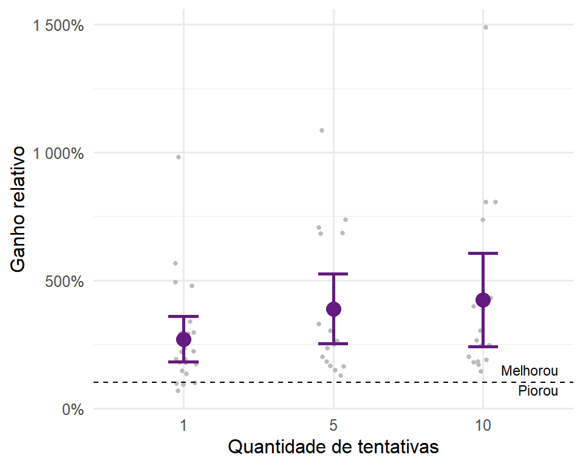
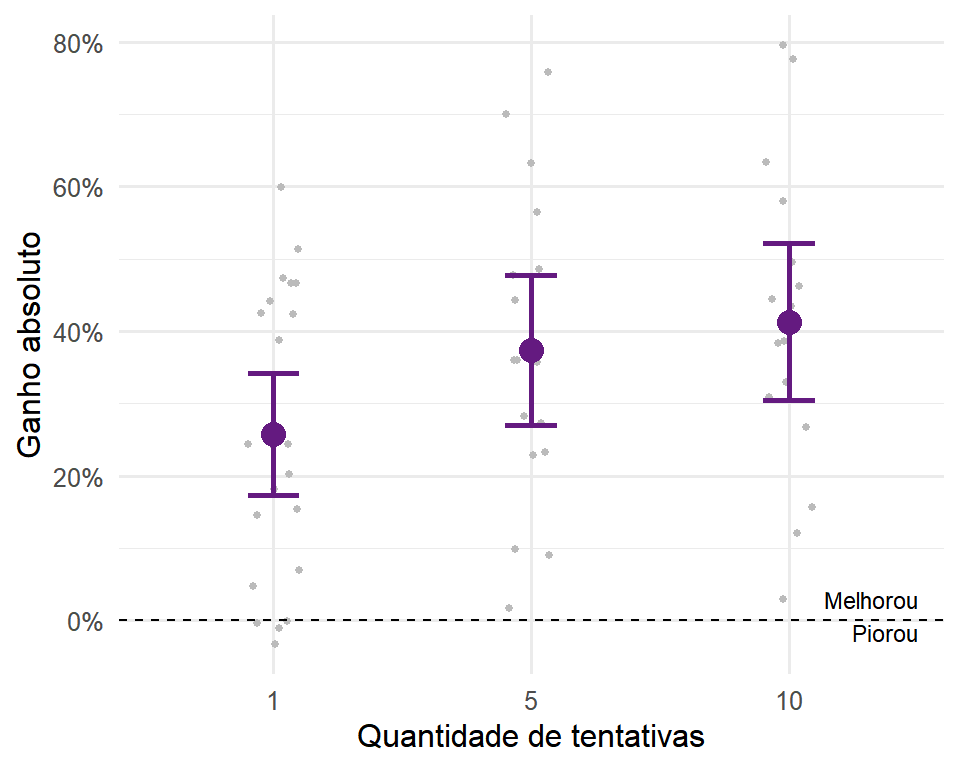
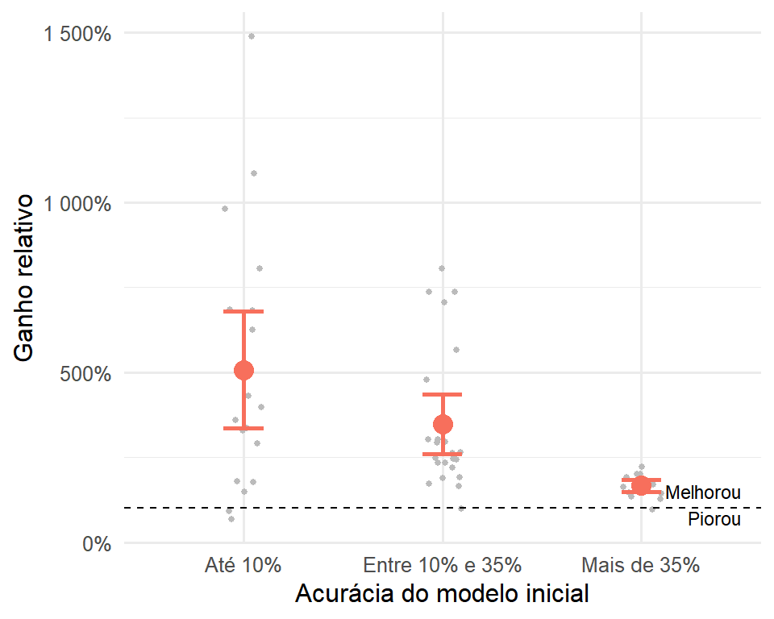
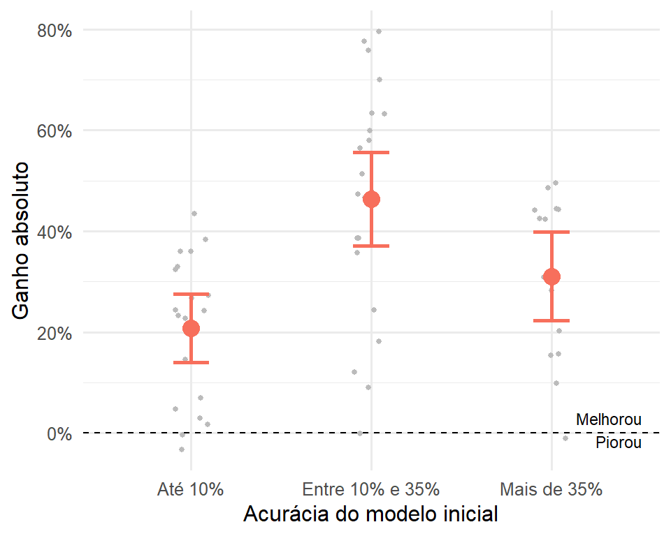
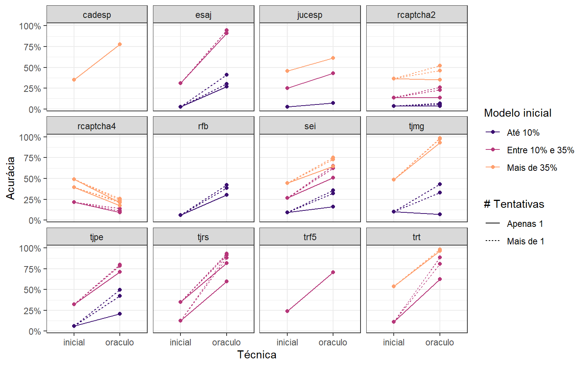
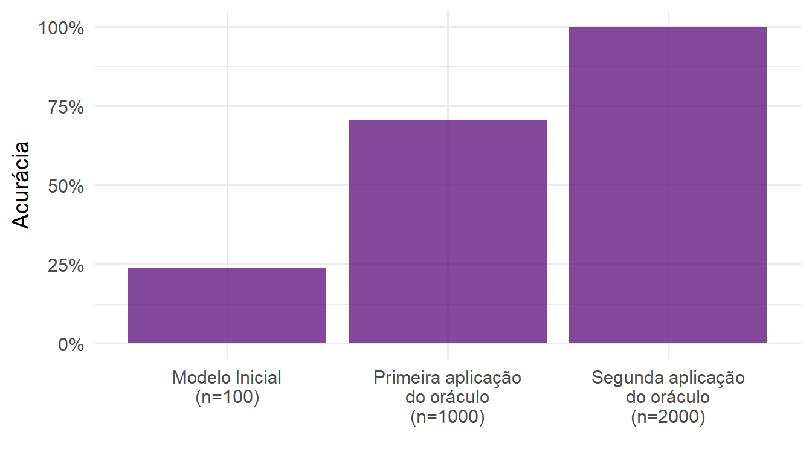

4 Modelagem
O fato da informação ser incompleta e fraca não significa que ela é inútil. Neste capítulo, discutimos como a informação do oráculo é usada pelos modelos e mostramos, tanto através de demonstrações matemáticas quanto com simulações que os resultados são positivos e consistentes.
O capítulo foi organizado duas seções. Na Seção @ref(result-theory), mostramos as propriedades matemáticas e probabilísticas da estratégia adotada. Na Seção @ref(result-sim), mostramos os resultados empíricos obtidos das simulações.
Resultados teóricos
Nesta seção, buscamos demonstrar que o uso de oráculos com a função de perda baseada nas informações censuradas i) não piora o poder preditivo do modelo e ii) converge para o modelo preditivo ótimo. Para isso, temos de passar por uma série de definições.
Resultados empíricos
Nesta seção mostramos os resultados das simulações realizadas. Como comentado no capítulo anterior, foram realizadas 65 simulações no total, variando no tipo de Captcha, a acurácia do modelo inicial e a quantidade de tentativas no oráculo.
Para realizar os cálculos, montamos uma base de dados com os resultados das simulações. A base está disponível publicamente no repositório da tese e contém colunas para o Captcha ajustado (captcha), a quantidade de observações do modelo inicial (n), a quantidade de tentativas do oráculo (ntry), a etapa da simulação (fase, inicial ou oráculo), o caminho do modelo ajustado (model) e a acurácia obtida (acc).
Em média, foi observado o ganho de 314% na acurácia após a aplicação da técnica do oráculo. Ou seja, em média a acurácia do modelo com aplicação do oráculo foi de mais de três vezes a acurácia do modelo inicial. Em termos absolutos (diferença entre as acurácias), o ganho foi de 27%, ou seja, depois da aplicação do oráculo os modelos ganharam, em média, 27% na acurácia.
Separando os resultados gerais por quantidade de tentativas, observa-se os ganhos relativos e absolutos nas Figuras @ref(fig:simulacao-geral-ntry-relativo) e @ref(fig:simulacao-geral-ntry-absoluto). Cada ponto é uma simulação e o ponto em destaque é o valor médio, acompanhado de intervalo \(m \mp 2*s/\sqrt(n)\), com \(m\) sendo a média, \(s\) o desvio padrão e \(n\) a quantidade de dados. A linha pontilhada indica se a acurácia aumentou ou diminuiu após a aplicação da técnica.
Na Figura @ref(fig:simulacao-geral-ntry-relativo) é possível notar que os ganhos em acurácia apresentam alta variabilidade, mas que apresentam uma tendência positiva com relação ao número de tentativas. O ganho entre aplicar 5 e 10 tentativas é menos expressivo do que o ganho entre aplicar 1 e 5 tentativas, indicando que a oportunidade oferecida por sites que aceitam vários chutes é relevante e que não há necessidade de fazer tantos chutes para aproveitar essa oportunidade.

A Figura @ref(fig: simulacao-geral-ntry-absoluto), com as os ganhos absolutos, mostra a mesma informação mas em quantidades mais fáceis de interpretar. O ganho médio absoluto em Captchas mais de um chute girou em torno de 40%, enquanto que o ganho com apenas um chute ficou um pouco acima de 25%. Importante notar também que o uso do oráculo só piorou a acurácia do modelo (e pouco) em casos que com apenas um chute, mostrando que a técnica é consistentemente efetiva.

As Figuras @ref(fig:simulacao-geral-inicial-relativo) e @ref(fig:simulacao-geral-inicial-absoluto) apresentam os resultados gerais separando por acurácia inicial do modelo. A estrutura do gráfico é similar às visualizações separando por quantidade de tentativas. As categorias escolhidas foram de até 10%, mais de 10% até 35% e mais de 35% de acurácia no modelo inicial. A escolha dos intervalos se deram pela quantidade de observações em cada categoria
A Figura @ref(fig:simulacao-geral-inicial-relativo) mostra os ganhos relativos. É possível notar uma tendência de queda no ganho de acurácia com uso do oráculo conforme aumenta a acurácia do modelo inicial. Esse resultado é esperado, pois, como a acurácia é um número entre zero e um, um modelo que já possui alta acurácia não tem a possibilidade de aumentar tanto.

A Figura @ref(fig:simulacao-geral-inicial-absoluto) mostra os ganhos absolutos. O gráfico apresenta o mesmo problema que o anterior, já que o ganho máximo depende da acurácia inicial do modelo. Mesmo assim, é possível notar que, em termos absolutos, modelos com acurácia inicial entre 10% e 35% apresentaram um ganho maior que modelos com acurácia inicial de até 10%.

Para lidar com o fato da acurácia ser um número limitado, fizemos o mesmo gráficos de antes, mas ajustado pelo máximo possível que a técnica do oráculo poderia proporcionar. O ganho absoluto ajustado de uma simulação é dado por
\[ \text{ganho} = \frac{\text{oráculo } - \text{ inicial}}{1\; - \text{ inicial}}. \]
A Figura @ref(fig:simulacao-geral-inicial-absoluto-ajustado) mostra os ganhos ajustados. Pelo gráfico, é possível notar que existe um ganho expressivo da técnica do oráculo para modelos iniciais com mais do que 10% de acurácia com relação a modelos iniciais com até 10% de acurácia. Ou seja, quando o modelo inicial é fraco, o ganho ao usar a técnica é menor. É importante notar, no entanto, que as simulações mostram a aplicação da técnica apenas uma vez – é possível baixar mais dados e atualizar o modelo indefinidamente. O menor efeito da técnica para modelos iniciais fracos não significa, portanto, que a técnica não funciona para modelos iniciais fracos; pelo contrário: ela ajuda o modelo a sair do estado inicial e o leva para uma acurácia maior, de onde poderíamos aplicar a técnica novamente para obter resultads ainda mais expressivos.

Na Figura @ref(fig:simulacao-captcha), mostramos os resultados separando por Captcha. Cada linha é uma combinação de Captcha, quantidade de tentativas e acurácia modelo inicial, que foi classificado em três categorias. As linhas pontilhadas indicam modelos ajustados com mais de uma tentativa, enquanto as linhas contínuas mostram modelos ajustados com apenas uma tentativa. A primeira extremidade de cada linha, do lado esquerdo, indica a acurácia do modelo inicial e a segunda extremidade, do lado direito, a acurácia do modelo usando a técnica do oráculo.

Pelo gráfico, é possível identificar duas informações relevantes. Como já verificado anteriormente, os modelos ajustados com mais de uma tentativa apresentam maiores ganhos do que os modelos ajustados com apenas uma tentativa. Verifica-se também que modelos com acurácia inicial menores não necessariamente apresentam ganhos menores quando separados por Captcha.
Pelas análises das simulações, é possível concluir que a técnica do oráculo foi bastante bem sucedida. Primeiro, ela apresenta resultados expressivos e de forma consistente, mesmo dando apenas um passo de obtenção de dados e ajuste de novo modelo. Além disso, a técnica é capaz de se aproveitar de sites que permitem a verificação do oráculo múltiplas vezes para o mesmo Captcha. Por último, a técnica apresenta ganhos mesmo para modelos iniciais muito fracos (com acurácias de até 10%), indicando que sua aplicação é indicada para qualquer modelo inicial com mais de 5% de acurácia, o que é bastante factível de atingir com bases pequenas ou com modelos genéricos.
Aplicação iterada
Um possível problema em aplicar a técnica do oráculo é que a técnica pode introduzir viés no modelo, o que impediria de ser aprimorado indefinidamente. Mesmo que os teoremas dêem uma boa base para acreditar que isso não seja verdade, foi feito um teste empírico, com apenas um Captcha, para verificar se a aplicação da técnica múltiplas vezes apresenta bons resultados.
O Captcha escolhido para a simulação foi o trf5, por ser um Captcha que não aceita múltiplos chutes, em uma tentativa de obter um pior caso. Para esse Captcha, o melhor modelo obtido com a técnica do oráculo foi considerado como modelo inicial e usado para baixar novos dados do site do Tribunal. Os novos dados foram adicionados à base de treino, ajustando-se um novo modelo.
A Figura @ref(fig:aplicacao-iterada) mostra os resultados da aplicação iterada. A utilização da técnica não só funcionou como levou o modelo a uma acurácia de 100%.

O resultado sugere que a técnica pode sim ser utilizada indefinidamente para auxiliar no aprendizado do modelo. Ela sugere, ainda, que uma técnica de aprendizado ativo com feedback automático do oráculo pode dar bons resultados, já que a forma de obter os dados não introduz viés no ajuste do modelo.
Aprendizado ativo (TODO)
Aqui a ideia é mostrar os resultados do aprendizado ativo, se der tempo de fazer.